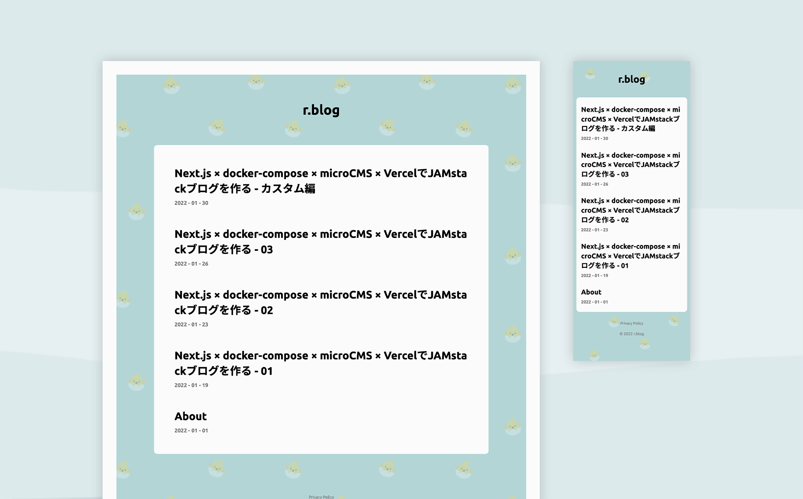

rix
r.blog
blogsite

Next.jsとdocker-composeのスキルを身につけるため、JAMstackを採用した技術ブログを製作しました。
大まかな構築の流れはチュートリアルを参考にしていますが、docker-composeでの開発サーバーの立ち上げ、css設計やライブラリの使用などを工夫しています。特にライブラリのインストールではDockerコンテナの理解に繋がりました。
また、不定期で記事を更新していますが、作業手順や学んだことを記事用にまとめなおすことは思考の整理と定着にも繋がっています。
リポジトリはこちら。ブログはこちら。
- Date
- 2022/1
- Skills
- Figma VScode Next.js Sass(scss) git(CUI) github docker-compose
Comment
元はReact.jsを勉強するつもりが、一つ飛んでNext.jsになってしまいました。フレームワークなのでページが簡単に製作できる反面、Javascript、React.js自体の勉強にはあまりなっていない気がしています… ただJAMstackというか、ヘッドレスCMSは今後流行りそうな気がするので触ることが出来てよかったです。